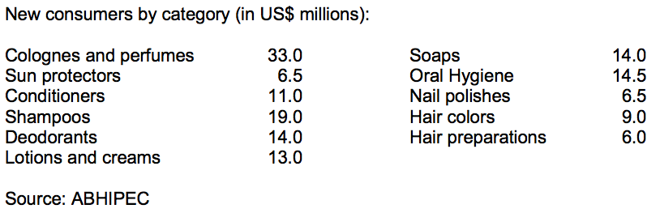

While the personal hygiene market in Brazil constitutes the majority of total sales in the cosmetics and toiletries sector, the cosmetics sector shows the biggest potential in Brazil. New and improved imported and domestic product lines for teenagers and women between the ages of 35 and 60 have especially good potential.

Best prospects for U.S. exports to the Brazilian cosmetics and toiletries market include: bio-cosmetics, ethnic products, and cosmetics for men. It is notable that Brazil is the world’s largest market for men’s personal care products.